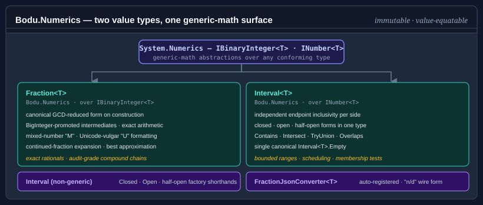

Bodu.Numerics

Bodu.Numerics is the numeric-primitives package of the Bodu suite. It centers on four value types — Fraction<T> for exact rational arithmetic, Interval<T> for intervals over ordered numeric coordinates, BigDecimal for arbitrary-precision decimals beyond System.Decimal's range, and Complex<T> for complex numbers over any IEEE 754 component type — all built on the generic-math interfaces (INumberBase<T>, INumber<T>, ISignedNumber<T>) so they compose with anything that targets the .NET 7+ numeric abstractions. Around Interval<T> sit its set-algebra companions: the integer-domain DiscreteInterval<T>, the binary-result IntervalPair<T> / DiscreteIntervalPair<T>, and the N-ary IntervalSet<T>. Alongside them sit the single-pass statistics aggregates — RunningStatistics<T>, RunningQuantile<T>, MovingSum<T>, and MovingMinMax<T>. Part of the Numerics & Financial topic.
Bodu.Numerics is the dependency that Bodu.Financial reaches for when an accounting workflow needs sub-minor-unit precision: Money<TCurrency>.ToFraction() round-trips through Fraction<BigInteger> for compound interest, percentage-of-percentage, and other chains where deferred rounding matters.

Namespaces and headline types
Bodu.Numerics
| Type | Purpose |
|---|---|
| Fraction<T> | Immutable canonical rational over any IBinaryInteger<T> backing type. Auto-reduces to GCD-normalised form on construction, raises overflow to BigInteger precision internally, and implements the full INumber<T> / ISignedNumber<T> surface. |
| Interval<T> | Immutable continuous interval over any INumber<T> endpoint type. Endpoint inclusivity is independent on each side (closed-closed, open-open, closed-open, open-closed), each side may be unbounded (All / AtLeast / AtMost …), and the full set algebra — Intersect, TryUnion, Difference, SymmetricDifference, & / | — is provided. |
| Interval | Non-generic helper class with factory methods (Closed, Open, ClosedOpen, OpenClosed, AtLeast, AtMost, …) that infer the endpoint type from the arguments. |
| DiscreteInterval<T> | Immutable integer-domain interval over any IBinaryInteger<T> type. Canonicalizes every shape to closed integer bounds, so an open interval over consecutive integers is empty and successor-adjacent runs merge — the discrete counterpart to Interval<T>. |
| DiscreteInterval | Non-generic helper class mirroring the DiscreteInterval<T> factories with type inference. |
| IntervalPair<T>, DiscreteIntervalPair<T> | Allocation-free results of a binary Difference / SymmetricDifference — zero, one, or two disjoint pieces, indexable and enumerable. |
| IntervalSet<T> | Immutable normalized union of disjoint, non-adjacent intervals — the N-ary home for Union / Intersect / Except / Complement when a result can be a disconnected range. |
| BigDecimal | Immutable arbitrary-precision decimal — a BigInteger unscaled value paired with an int scale. Unbounded (no overflow), with exact add / subtract / multiply, precision-controlled division, value-based equality across scales, and the full INumber<BigDecimal> / ISignedNumber<BigDecimal> surface. |
| Complex<T> | Immutable complex number over any IFloatingPointIeee754<T> component type (float, double, Half) — the generic counterpart of the double-only System.Numerics.Complex. Arithmetic, Conjugate / Reciprocal, the elementary functions (Sqrt, Exp, Log, Pow, trigonometric and hyperbolic), parsing / formatting, and the INumberBase<T> / ISignedNumber<T> surface. |
| RunningStatistics<T>, RunningQuantile<T> | Single-pass, constant-space stream accumulators: Welford count / min / max / mean / variance with a parallel Combine merge, and a P² streaming quantile estimator. |
| MovingSum<T>, MovingMinMax<T> | Rolling-window companions reporting the sum / mean and min / max of the most recent N samples in amortized O(1). |
The core value types are serialization-agnostic — they carry no [JsonConverter] attribute. JSON support ships in the companion Bodu.Numerics.Serialization.Json package (below), which you register with options.AddNumericsJsonConverters().
Bodu.Numerics.Serialization.Json
| Type | Purpose |
|---|---|
| NumericsJsonSerializerOptionsExtensions | AddNumericsJsonConverters(this JsonSerializerOptions, NumericsJsonPolicy) — registers a coherent converter set for every numeric value type from one policy value. |
| NumericsJsonPolicy | Selects the wire shape and read strictness — Strict (canonical object), Lenient (object + import aliases), or Compact (single string). |
| FractionJsonConverter<T>, FractionJsonConverterFactory | Converters for Fraction<T> — Strict object shape { "numerator": …, "denominator": … } or the compact "numerator/denominator" string. |
| IntervalJsonConverter<T>, IntervalJsonConverterFactory | Converters for Interval<T>, including the lowerUnbounded / upperUnbounded markers for infinite sides. |
| DiscreteIntervalJsonConverter<T>, IntervalSetJsonConverter<T> | Converters for DiscreteInterval<T> (through the interval wire shape) and IntervalSet<T> (a JSON array of pieces), each with a matching factory. |
| BigDecimalJsonConverter | Converter for BigDecimal — Strict object shape { "unscaledValue": …, "scale": … } or the compact decimal string "12.340". Non-generic, so it registers directly without a factory. |
| ComplexJsonConverter<T>, ComplexJsonConverterFactory | Converters for Complex<T> — Strict object shape { "real": …, "imaginary": … } (non-finite components written as the strings "NaN" / "Infinity" / "-Infinity") or the compact "<real; imaginary>" string. |
| FractionJsonExtensions | ToJson() / FromJson<T>(string) convenience helpers over the registered converters. |
Interface surface
The value types are readonly structs that opt into the relevant BCL contracts, so they substitute into generic-math, comparison, parsing, formatting, and span/UTF-8 pipelines without adapters. The four headline types compare as follows (the interval companions follow Interval<T>):
| Interface | Fraction<T> |
BigDecimal |
Complex<T> |
Interval<T> |
What it unlocks |
|---|---|---|---|---|---|
| INumber<TSelf> | ✓ | ✓ | — (INumberBase<T> only — complex numbers do not order) |
— | First-class number — Sum, Aggregate, any INumber-constrained algorithm. |
| ISignedNumber<TSelf> | ✓ | ✓ | ✓ | — | NegativeOne, signed-only generic constraints. |
| IEquatable<T> | ✓ | ✓ | ✓ | ✓ | Structural value equality; safe hash-set / dictionary keys. |
| IComparable<T> / IComparable | ✓ | ✓ | — | — | Ordering, OrderBy, SortedSet. (Interval<T> is a set, not a scalar — it does not order.) |
| IParsable<TSelf> / ISpanParsable<TSelf> | ✓ | ✓ | ✓ | ✓ | Parse / TryParse over string and ReadOnlySpan<char>. |
| IUtf8SpanParsable<TSelf> | ✓ | ✓ | ✓ | ✓ | Parse directly from a UTF-8 byte span. |
| IFormattable / ISpanFormattable / IUtf8SpanFormattable | ✓ | ✓ | ✓ | ✓ | ToString(format, provider) plus allocation-free TryFormat into char and UTF-8 buffers. |
Formatting and parsing
Fraction<T> ships four text forms behind standard format specifiers, and every output form is also an accepted input form — any ToString result feeds back through Parse to the same value:
| Specifier | Output | Example (7/3) |
|---|---|---|
G (default) |
improper ratio | 7/3 |
M |
mixed number | 2 1/3 |
U |
Unicode vulgar fraction, mixed-number fallback | 2⅓ |
P |
percentage | 700/3% |
Note
The P specifier scales the value by 100 and re-reduces, then renders the result as a ratio numerator/denominator% (or a bare numerator% when the scaled value is whole) — it does not switch to mixed-number form. So 7/3 formats as 700/3%, 7/4 as 175%, and 3/4 as 75%. Specifiers are case-insensitive; any specifier other than G/M/U/P throws FormatException.
The "U" specifier emits one of the 18 Unicode "Number Forms" vulgar-fraction glyphs (½, ⅓, ⅗, ¾, …) when one exists for the proper-fraction part, falling back to the mixed-number form otherwise. The parser accepts whole integers, ratios, mixed numbers, the glyph forms (including whole + glyph, "2⅜"), and percentage syntax:
var x = Fraction<int>.Create(7, 3);
x.ToString(); // "7/3"
x.ToString("M"); // "2 1/3"
x.ToString("U"); // "2⅓"
Fraction<int>.Parse("2 1/3"); // 7/3
Fraction<int>.Parse("⅗"); // 3/5
Fraction<int>.Parse("75%"); // 3/4
Culture handling is deliberately narrow: the structural characters — the /, the mixed-number space, the glyph codepoints, the trailing % — are invariant, while the supplied IFormatProvider is forwarded to the BigInteger component formatting and parsing so culture-specific digit shapes are respected. Both value types also implement the span and UTF-8 formatting / parsing interfaces (ISpanFormattable, IUtf8SpanFormattable, ISpanParsable<T>, IUtf8SpanParsable<T>) for low-allocation pipelines, and Interval<T> formats and parses ISO 31-11 bracket notation ("[0, 100)", "∅" for empty). See Formatting and parsing Fraction<T> for the full grammar and glyph table.
Approximation and continued fractions
Fraction<T>.Approximate(value, maxDenominator) returns the best rational approximation to a value within a denominator bound — no rational with a smaller denominator, and none with the same denominator, gets closer. Overloads accept double, decimal, and string input. The search walks the convergents of the value's continued-fraction expansion, the sequence of progressively better rational approximations produced by truncating the expansion at successive coefficients:
Fraction<int> piApprox = Fraction<int>.Approximate(Math.PI, maxDenominator: 1000);
// 355/113 — the Zǔ Chōngzhī approximation, error ≈ 2.7×10⁻⁷
int[] coeffs = Fraction<int>.Create(610, 377).ToContinuedFraction();
// [1, 1, 1, 1, …] — golden-ratio convergent
Fraction<int> reconstructed = Fraction<int>.FromContinuedFraction(coeffs);
Fraction<T>.LimitDenominator(maxDenominator) re-approximates an existing fraction within a tighter denominator bound, and ToContinuedFraction() / FromContinuedFraction(coeffs) expose the coefficient list [a0; a1, a2, …] directly — the leading coefficient carries the sign, every following coefficient is strictly positive.
Approximation complements the exact converters: FromDouble is exact in the IEEE 754 sense and may produce a fraction with a very large denominator for values that look "nice" in base 10 (FromDouble(0.1) is not 1/10). Reach for Approximate when you want the intended rational rather than the bit-exact one. See Working with Fraction<T> for the full walkthrough.
JSON serialization
The core value types are serialization-agnostic; JSON support ships in the companion Bodu.Numerics.Serialization.Json package. Register the converters with AddNumericsJsonConverters, then serialize as normal. The default Strict policy emits the canonical object shape; each component is written as a raw JSON number under the invariant culture, so a Fraction<BigInteger> survives at any magnitude and payloads remain stable regardless of the ambient culture:
using System.Text.Json;
using Bodu.Numerics.Serialization.Json;
var options = new JsonSerializerOptions().AddNumericsJsonConverters();
string json = JsonSerializer.Serialize(new Fraction<int>(3, 4), options);
// {"numerator":3,"denominator":4}
Fraction<int> roundTrip = JsonSerializer.Deserialize<Fraction<int>>(json, options);
Select a different wire shape by passing a NumericsJsonPolicy — Strict (explicit object shape), Lenient (Strict plus import-friendly aliases and defaulted inclusivity), or Compact (string forms: "3/4" for fractions, ISO 31-11 bracket notation "[1, 5)" for intervals). DiscreteInterval<T>, IntervalSet<T>, BigDecimal, and Complex<T> are covered by the same call. See JSON serialization for the policy table and worked examples.
Scenarios this library covers
| Scenario | Reach for |
|---|---|
| Exact rational arithmetic across arbitrary backing integer types | Fraction<T> |
| Arbitrary-precision rational arithmetic (no overflow) | Fraction<BigInteger> |
Best rational approximation to a double or decimal within a denominator bound |
Fraction<T>.Approximate(value, maxDenominator) |
| Continued-fraction expansion and reconstruction | Fraction<T>.ToContinuedFraction() / FromContinuedFraction(coeffs) |
| Closed / open / half-open numeric intervals | Interval<T> |
Unbounded or half-bounded ranges ((-∞, 5], [0, +∞), the whole line) |
Interval<T>.All / AtLeast / GreaterThan / AtMost / LessThan |
| Membership tests, intersection, union, adjacency over numeric intervals | Interval<T>.Contains, Intersect, TryUnion, Overlaps |
| Difference and symmetric difference of two intervals (≤ 2 pieces) | Interval<T>.Difference / SymmetricDifference → IntervalPair<T> |
| Discrete integer intervals — successor-aware emptiness and adjacency | DiscreteInterval<T> |
| An arbitrary union of disjoint ranges, with complement over the line | IntervalSet<T> (Union / Intersect / Except / Complement) |
| Mixed-number and Unicode-vulgar-fraction formatting | Fraction<T>.ToString("M") / .ToString("U") |
| Round-trippable text for intervals (ISO 31-11 bracket notation) | Interval<T>.ToString() / Parse |
Generic-math algorithms (Sum, Aggregate, linear algebra) over exact rationals |
Fraction<T> as INumber<Fraction<T>> |
Exact decimals beyond System.Decimal's precision or exponent range |
BigDecimal |
Complex arithmetic and elementary functions over float / double / Half |
Complex<T> |
| Single-pass mean / variance / quantile summaries and rolling-window sums or extremes | RunningStatistics<T>, RunningQuantile<T>, MovingSum<T>, MovingMinMax<T> |
| Selecting a JSON wire shape (object, import-lenient, compact string) | AddNumericsJsonConverters(NumericsJsonPolicy.…) |
| Sub-minor-unit-precise monetary calculations | Fraction<T> via Money<TCurrency>.ToFraction() |
Design choices
- Canonical form on construction. Every
Fraction<T>is GCD-reduced with the sign on the numerator and the denominator strictly positive. There is no unreduced form, and2/4and1/2are indistinguishable after construction. The benefit is that equality, comparison, and hashing are all structural —Equalscompares the stored components directly,GetHashCodecombines them, and there is no separate "normalise then compare" step. BigIntegerintermediates. Arithmetic operations promote operands toBigInteger, evaluate exactly, reduce, then narrow back toT. The intermediate magnitude can exceedT's range freely; only the final canonical components must fit. Overflow on narrowing raisesOverflowException— never a silent wrap, saturation, or truncation.Fraction<BigInteger>eliminates the narrowing step entirely.- No NaN, no infinity.
Fraction<T>models only the rationals: division by zero throws DivideByZeroException, non-finitedoubleinput toFromDoublethrows ArgumentException, and theINumberpredicates report this honestly —IsNaNand theIsInfinityfamily are alwaysfalse,IsFiniteandIsRealNumberalwaystrue. If you need IEEE 754 propagation semantics, stay withdouble. - One empty interval.
Interval<T>honours the mathematical fact that there is one empty set: any inverted-bounds or equal-bounds-with-open-endpoint interval compares equal toInterval<T>.Empty, shares its hash code (zero), and reads identically through every set operation.default(Interval<T>)is therefore the empty interval, not a malformed value — a struct field that was never assigned is well-formed. - Generic-math first. Both types implement the relevant
INumber-style interfaces so they slot into algorithms written against the generic-math abstractions without bespoke wrappers.
Cost and allocation model
Fraction<T>is a widereadonly structholding twoTcomponents (the numerator and the canonical denominator). For a fixed-widthT(int,long,Int128) the value lives entirely on the stack and copies by value — no heap traffic.Fraction<BigInteger>carries twoBigIntegers, each of which heap-allocates for magnitudes beyond a machine word.- Every arithmetic operation promotes to
BigIntegerto evaluate exactly, so evenFraction<int>arithmetic allocates the transientBigIntegeroperands. Construction additionally runs oneBigInteger.GreatestCommonDivisor(Euclidean,O(log min(|n|, |d|))divisions). This is the price of exactness; for hot inner loops over boundedintvalues where rounding is acceptable, plainintarithmetic is faster. Interval<T>stores twoTendpoints plus a one-byte inclusivity flag. Its operations —Contains,Overlaps,Intersect,TryUnion— are a handful ofTcomparisons and allocate nothing; the whole type is allocation-free over a fixed-width endpoint type.- Formatting allocates a
string;TryFormatdoes not. TheISpanFormattable/IUtf8SpanFormattablesurfaces let both types render into a caller-suppliedSpan<char>/Span<byte>without an intermediatestring, and the span/UTF-8 parse surfaces read without allocating one.
Where to go next
- Core concepts — glossary the rest of the documentation assumes.
- Getting started — install the package and run minimal samples for
Fraction<T>andInterval<T>. - Working with
Fraction<T>— construction, arithmetic, parsing, formatting, continued fractions, rational approximation. - Working with
Interval<T>— endpoint inclusivity, membership, intersection, union, adjacency. - Working with
BigDecimal— the unscaled-value / scale model, exact arithmetic, division precision, rounding, generic-math composition. - Working with
Complex<T>— construction and polar form, arithmetic, magnitude / phase / conjugate / reciprocal, the elementary functions pinned againstSystem.Numerics.Complex, the<real; imaginary>text form, and the JSON wire shape. - Running statistics and moving windows — the single-pass accumulators and rolling-window companions.
- Interval algebra — unbounded endpoints, difference / symmetric difference, the
&/|operators, and the N-aryIntervalSet<T>. - Discrete integer intervals — the integer-domain
DiscreteInterval<T>and how it differs from the continuous type. - Formatting and parsing
Fraction<T>— specifiers, the parsing grammar, culture handling, span / UTF-8 surfaces. - JSON serialization — the converter factories and the
NumericsJsonPolicywire shapes. - Numerics & Financial topic overview — how this package and
Bodu.Financialfit together. - Numerics & Financial guides — the guides landing page for both libraries.
- Bodu.Financial introduction — the monetary library that uses
Fraction<BigInteger>as its precision escape hatch. - Bodu.Numerics API reference — full type-by-type docs.